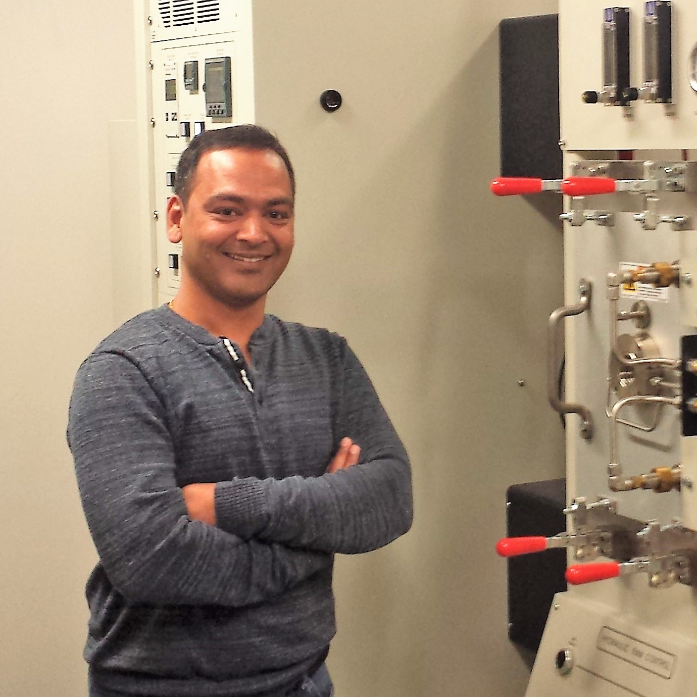

People
Principal Investigator

Dr. Vikas Jindal
Professor, Department of Metallurgical Engineering
IIT (BHU), Varanasi — 221005
B.Tech, IIT Kanpur • M.S., Singapore-MIT Alliance (NUS) • Ph.D., IIT (BHU)
Post-doctoral Fellow, University of Utah, USA (2015–16)
vjindal.met@iitbhu.ac.in | Google Scholar | IIT(BHU) Profile
Current PhD Students

Murali Padiri
PhD (Reg. 2021)
Ti-TiB Composites and Functionally Graded Materials
HK
Harish Kumar
PhD (Reg. 2023)
Computational Thermodynamics & Ti Alloys

Ishu Yadav
PhD (Reg. 2020, Co-sup.)
Beta-Titanium Biomedical Alloys
RK
Roshan Kumar
PhD (Reg. 2024, Co-sup.)
Atomistic Simulations; Scientist, CSIR-NML Jamshedpur
PhD Alumni
| Name | Year | Thesis Topic |
|---|---|---|
| Dr. Shanker Kumar | 2024 |
Short-range order in high entropy alloys: Thermodynamic modeling and application to Nb-Ti-V-Zr system Asst. Professor (Gr-II), MME, NIT Warangal · Profile ↗ |
| Dr. Ashwani Ranjan (Co-sup.) | 2023 |
Reciprocating Wear of In-situ Synthesized Ti-TiB Composites R&D Project Manager, Reliance Industries Ltd., Jamnagar (HJT & Perovskite solar cell technologies) · LinkedIn ↗ |
| Dr. Rajendra Prasad Gorrey (Co-sup.) | 2021 |
Analytical Approximations to Short Range Order in Binary Alloys using Cluster Variation Method Post-doc: University of Virginia, USA (2023–2024) · Asst. Professor, MME, NIT Andhra Pradesh · Profile ↗ |
M.Tech Alumni
| Name | Year | Thesis Topic |
|---|---|---|
| Nitesh Kumar Sah | 2024 | Synthesis and Study of Creep and Mechanical Behavior of Low-Cost Fe-Based β-Ti-TiB Composite |
| Abhishek Sharma | 2023 | Effect of Heat Treatment on Micro-segregation of Refractory High Entropy Alloy |
| Akash Patle | 2023 | Experimental Investigation and Thermodynamic Assessment of the B-Fe-Mo-Ti Quaternary System |
| Shiv Shankar | 2023 | Diffusion Welding of Ti-6Al-4V and SS-316L Using Copper Interlayer |
| N. Pawan Subhash | 2021 | Thermodynamic Reassessment of W-Zr System using SQS |
| Shibjyoti Biswas | 2021 | Cluster Expansion of Nb-Ti-V-Zr High Entropy Alloys |
| Albert Linda | 2020 | CALPHAD-Assisted Designing of Al-Si Alloys for Thermal Energy Storage |
| Bidipta Dam | 2020 | Development of Ti-Fe-Sn Alloy as an Affordable Orthopedic Bioimplant Material |
| Anil Prasad | 2020 | First Principles Study of Mechanical Properties for Biomedical Applications |
| Ishu Yadav | 2019 | Thermodynamic Re-assessments of Ti-Zr and Nb-Zr Binary Sub-systems (Ab-initio) |
| Naveen Kumar | 2019 | Re-Assessments of Ta-Zr and Ta-Ti Binary Subsystems Assisted by Ab-Initio Calculations |
| Abhishek Kumar Thakur | 2018 | Thermodynamic Reassessment of Nb-Ti Alloy System Using Computational Methods |
| Baibhab Dev | 2014 | Computational Thermodynamics of Ta-Ti and Nb-Ti Binary Systems using CVM and M-CVM |
| Vasu Shreyasi | 2013 | Calculation of Optimized Mo-Ti Phase Diagram Using CVM |
| Vikas Sharma | 2013 | Computation of Optimized Ti-V Phase Diagram Using CE-CVM Method |
| Manikandan Mariyappan (Dual Degree) | 2013 |
Computation of Optimized Phase Diagram of Cr-W System Using CVM Senior Product Development Engineer, KLA, Milpitas, CA, USA (optical wafer inspection & defect detection; 12+ yrs) · LinkedIn ↗ |
| Vivek Kumar Pandey | 2013 | Computation of Optimized Nb-Ti Phase Diagram using CE-CVM Method |
| Shivam Upadhyay | 2012 | Computational Thermodynamics of Au-Pt and Pd-Pt Phase Diagrams using CVM |
| Abhinav Jain | 2012 |
Computation of Optimized Hf-Ti and Y-Zr Phase Diagrams Using CVM PhD: Computational Materials Science, UIUC (2019) · Post-doc: EPFL, Switzerland (2019–2022) · Computational Materials Scientist, ASML, Netherlands · LinkedIn ↗ |
| Ankur Verma | 2011 | — |
B.Tech Alumni (Selected)
| Name | Year | Project / Current Position |
|---|---|---|
| Abhas Deva | 2015 |
CVM entropy functional using group theory PhD: Materials Engineering, Purdue University, USA (2021) · Post-doc: Argonne National Laboratory, USA (2021–2024) · Battery Modeling Scientist, Simlionics Pvt Ltd, Pune · LinkedIn ↗ |
Interested in Joining?
We welcome motivated PhD and M.Tech students. Check our Openings page for current positions.
View Openings